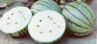
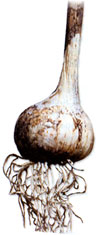

Great taste is one of the biggest reasons to grow your own garden, yet many of the best-tasting varieties are becoming hard to find because our current food system often values shelf life and shipping qualities more than taste and tenderness. MOTHER'S Cream of the Crops series presents outstanding varieties recommended by our readers.
Many gardeners think non-red water-melons are new. In fact, watermelons in other colors were once very common and are merely making a comeback. For instance, in her new book, Melons For The Passionate Grower, Amy Goldman says, "There's nothing more stunning than a platter of sliced watermelon with flesh tones of creamy white, salmon, canary yellow, psychedelic orange and pink lemonade."
White-fleshed varieties were grown for hundreds of years in Africa, but many of them are now extinct. Even in the 1800s, white-fleshed melons were common and were sold by many companies. One that remains, though rare, is `White-Meated,' a small, icebox-sized melon that grows to 2 to 3 pounds (shown above).
Its crisp, juicy, fruity-tasting flesh makes 'White-Meated' my favorite small watermelon. The skin is light green with dark radial stripes; when ripe, the flesh is creamy white, with relatively few seeds.
Seed is available from us at Baker Creek Heirloom Seeds [ www.rareseeds.com ; (417) 924-89171, and through Seed Savers Exchange members [ www.seedsavers.org; (563) 382-59901.
JERE GETTLE
Mansfield, Missouri
"Garlic is just garlic," a correspondent recently told me. I suggested that there were two reasons for that erroneous belief: 1) that all she'd ever tried was `California White,' from the supermarket; and 2) that she'd only cooked with it, and never tried it raw. Such proved to be the case.
In fact, there are more than 500 named garlic varieties, each with its own distinctive flavor and heat level. Of the dozens I've tried, `Shvelisi' is my favorite.
`Shvelisi' personifies garlic. When you bite into a clove there is a uniform mild heat and an overriding pungency that remains steady. The flavor fills your mouth and lasts for some time-long after the heat dissipates. Mild enough to eat raw, `Shvelisi' is still strong-flavored enough to stand up to cooking. A fairly large bulb with typically eight big cloves, `Shvelisi' is one of the best roasting garlics to be found.
This variety originated in the town of Shvelisi, in the Republic of Georgia, part of the former Soviet Union, and it's most often sold commercially under the name `Chesnook Red.' "Chesnook" is Russian for "garlic," but garlic fancier Darrell Merrell, thinking the variety should honor its birthplace, renamed it. The new name is slowly catching on.
`Shvelisi' (`Chesnook Red') is available from Blue Moon Farm [ bluemoongarlic.hypermart.net; (859) 328-24011; Filaree Farm [ www.filareefarm.com; (509) 422-6940];
Garlicsmiths [(509) 738-4470]; Territorial Seed Co. [ www.territorialseed.com; (541) 9429547]; and from Seed Savers Exchange members [ www.seedsaver.com; (563) 382-5990].
BROOK ELLIOTT
Contributing Editor
Limas come in two forms, the small sieva or butterbean type, which originated in Mexico, and the more familiar large-seeded limas, which come from South America-where they were cultivated as early as 5,300 B.C.
`Dr. Martin' is the largest of the limas, with two or three pale green beans in each huge pod, which is two to three times the size of most other lima pods. These pods often grow 7 or 8 inches long, with beans inside as big around as a half dollar.
Despite their size, the beans are sweet and delicious, raw or cooked. Fresh raw beans have a crunchy sweetness; when cooked, they are rich and creamy.
'Dr. Martin' seeds can be a little hard to get going. I often start them indoors and transplant, but they are worth this extra effort.
Seed is available from Landis Valley Museum [ www.landisvalleymuseum.org; (717) 569-0401 ext. 202]; P.L. Rohrer & Bro. [ www.rohrerseeds.com; (717) 299-2571]; and from Seed Savers Exchange members [ www.seedsaver.org; (563) 382-5990].
RICH MOORE
Edgewood, Maryland
Asian greens are becoming more common throughout the United States as gardeners discover their great flavors and textures. `Kailaan,' which is also known as Chinese broccoli or Chinese kale, is one of the best.
The flavor is mild and slightly sweet, with a hint of nuttiness, but without that bitter aftertaste or texture that some greens leave in your mouth. It remains tender, without falling apart, when cooked quickly, but is mild and sweet enough to eat raw in a salad. The flower buds and flowering heads are edible and delicious, with just enough texture to chew, if you cut the first 6 inches only. 'Kailaan' primarily is eaten raw, quickly stir-fried or steamed, but the raw leaves are so flexible that they make a great variation for stuffed cabbage rolls.
Sow `Kailaan' in early to mid-summer, with plants 4 inches apart. Seed is available from Evergreen Y.H. Enterprises [ www.evergreenseeds.com; (714) 637-5769] and Kitazawa Seed Co. [ www.kitazawaseed.com; (510) 595-1188].
CHRISTAL SADDLER
Lancaster, California
2 cups cooked rice
1 cup chopped parsley
1 cup cooked chickpeas
1/4 teaspoon each of cinnamon, nutmeg and allspice
Salt & pepper to taste
I teaspoon olive oil
2 to 3 cloves 'Shvelisi' or other large garlic, chopped
Juice of 1 1/2 lemons
Several bunches of large Kailaan leaves
Mix the rice, parsley, chickpeas, cinnamon, nutmeg, allspice, salt, pepper and oil. Blanch the Kailaan in boiling water for a minute or two to soften. Drain and pat dry. Put a heaping tablespoon of the stuffing on each leaf, roll it tightly, and put the rolls, seam side down and close together, in a kettle. Sprinkle the rolls with the garlic and additional salt.
Press an inverted plate over the rolls and add just enough water to reach the rim of the plate. Simmer the rolls, covered, until they are tender. Add the lemon juice and cook 10 more minutes.
To nominate your favorite varieties for this department, contact Brook Elliott; Box 519; Richmond, KY 40476; or e-mail BrookBarb@aol.com for details.
|
 |
 |
|